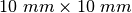

Un générateur alternatif simple¶
Objectif
Mesurer la fréquence et l’amplitude d’une tension induite aux bornes d’un bobinage par un aimant en rotation. On utilise l’aimant de  et la bobine de 3000 tours qui sont dans le kit.


Procédure
- Fixer l’aimant couché sur l’axe du moteur et alimenter ce moteur avec une pile de 1,5 V
- Activer A1 et A2, avec option d’analyse
- Régler la base de temps sur 100 ms pleine échelle
- Approcher le bobinage de l’aimant (sans le toucher), et observer la tension induite
- Recommencer l’expérience avec deux bobinages.
Discussion
La tension obtenue est affichée dans la figure. La différence de phase entre les deux signaux dépend de l’angle entre les axes des deux bobinages.
Approcher un bobinage court-circuité près de l’aimant et observer le changement de fréquence. Le bobinage court-circuité prend de l’énergie du générateur et la vitesse en est diminuée.